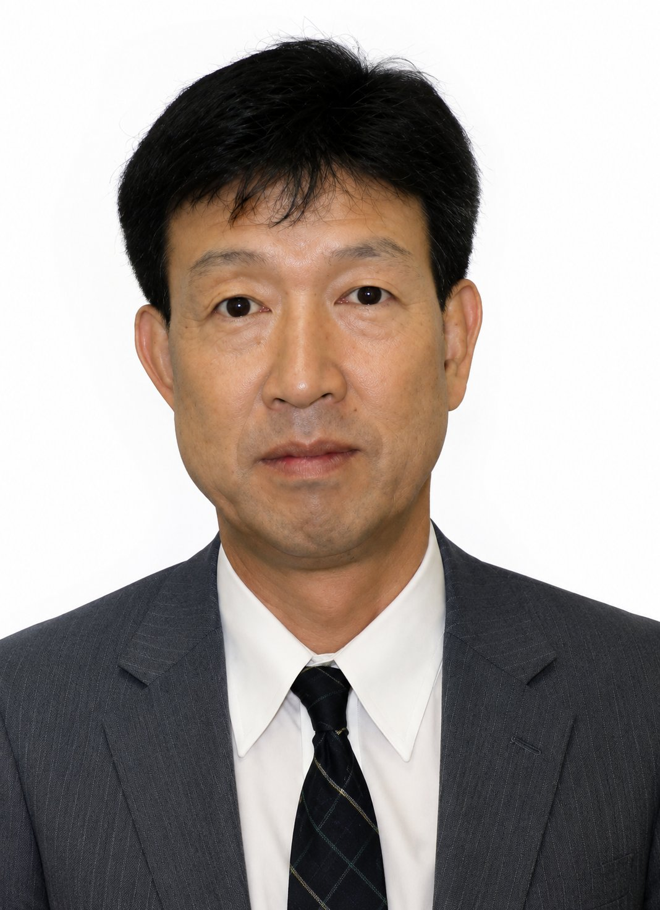

PROFILE
代表プロフィール

家地 洋之
代表取締役 / 博士(工学)
専門分野
物性物理学（物質のさまざまな巨視的性質を微視的な視点から研究する物理学の分野の実験的研究）
資格
博士(工学)
経歴
- 1980–1984 クラリオン株式会社 半導体研究所 研究員
-
1984–2011
株式会社リコー 中央研究所 主幹研究員
（兼務：国家PJ研究員 / 大学講師） -
2009–2013
千葉大学工学部 非常勤講師
講義名：応用電子物性 -
2010–2013
新潟大学大学院工学研究科 非常勤講師
講義名：電子材料物性特論 - 2012–2014 東北大学 未来科学技術共同研究センター 産学連携研究員
- 2014.10.2 株式会社IECHI 設立、代表取締役就任
- 2018.4.1 日本大学理工学部 上席客員研究員 就任
- 2025.11.20 株式会社IECHI 代表取締役社長 重任登記 — 現在に至る